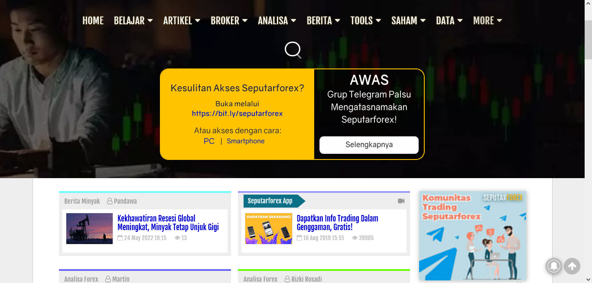

Yalin Hakiki
Programmer
Saya belajar tentang Teknologi Informasi di SMK dan kemudian mengasah kemampuan saya melalui pengalaman kerja. Saya telah bekerja selama lebih dari 5 tahun. Keahlian saya meliputi PHP, Python, JavaScript, dan MySQL.
Bahasa Pemrograman
PHP (Codeigniter/Laravel)
Javascript
MySQL
Python
Java
Keahlian Lainnya:
- Server Administrator
Instalasi, monitoring resource, backup data, optimize query - Version control
Git - Troubleshooting software & hardware pc
Instalasi, Analisa kerusakan pada software dan hardware - Web Scraping
Mengambil data pada website dengan php/python - Css
Membuat website yang responsive, rapi dan user friendly
Pengalaman Kerja:
- Wahana global imedia
Programmer (2018-Sekarang)
- Membuat website baru
- Maintenance dan membuat fitur pelengkap (tools,data)
- Membuat aplikasi android
- Karunia Travel
Programmer (2016-2018)
Membuat aplikasi travel dan aplikasi penunjang untuk internal - Aipel Computer
Teknisi Komputer (2015-2016)- Merakit komputer baru
- Menganalisa kerusakan dan melakukan perbaikan secara hardware dan software
Pendidikan:
- SMKN 2 Bangkalan
RPL
Portofolio:


